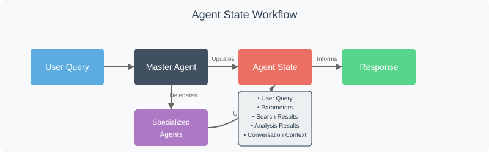

Chapter 7: Agent State
Welcome back to the EggHatch AI tutorial! In the last few chapters, we've explored some key parts of our system:
- The Master Agent (Orchestrator) acts as the brain, deciding the steps needed to answer your query.
- The LLM Client lets the Master Agent talk to the AI model.
- The Data Pipeline prepares the data for analysis.
- Specialized agents like the Sentiment Analysis Agent and Trend Analysis Agent perform specific analysis tasks using that data.
As the Master Agent (Orchestrator) guides your request through these different components and steps, a lot of information is generated: your original question, extracted details (like budget), results from the analysis agents (like trending topics), and the final answer being put together.
Where does all this information go? How do the different steps know what the previous steps found? This is where the Agent State comes in.
What is the Agent State?
Imagine the Agent State is a shared notebook or a digital whiteboard that travels with your query as it's processed by the Master Agent (Orchestrator).
When your query starts its journey:
- The Agent State starts as a blank page.
- As each step of processing happens, information is written into this state.
- Each component can read what previous components have written.
- The final response is constructed using all the information collected in the state.
This shared state is crucial because it allows information to flow between different parts of the system without each part needing to know exactly how the others work.
How the Agent State Works
The Agent State in EggHatch AI follows a structured approach to maintain context throughout a conversation:

Key Components of the Agent State
The Agent State manages several types of information:
User Query
The original question and any follow-up questions
Extracted Parameters
Budget, preferences, and other details extracted from queries
Search Results
Products and information retrieved from the database
Analysis Results
Outputs from sentiment and trend analysis
The Agent State Implementation
Let's look at a simplified version of the Agent State code:
class AgentState:
def __init__(self, user_id=None, conversation_id=None):
# Unique identifiers
self.user_id = user_id or str(uuid.uuid4())
self.conversation_id = conversation_id or str(uuid.uuid4())
self.created_at = datetime.datetime.now().isoformat()
# Core state components
self.user_query = {
"original_query": None,
"current_query": None,
"query_history": []
}
self.extracted_parameters = {
"budget": None,
"preferences": {},
"constraints": {},
"product_type": None
}
self.search_results = {
"products": [],
"reviews": [],
"last_search_params": {}
}
self.analysis_results = {
"sentiment": {},
"trends": {},
"recommendations": []
}
self.conversation_context = {
"current_step": "initial",
"previous_step": None,
"next_step": None,
"conversation_history": []
}
# For tracking changes to the state
self.state_history = []
self._save_state_snapshot()
def update_user_query(self, query):
"""Update the user query in the state"""
if self.user_query["original_query"] is None:
self.user_query["original_query"] = query
# Add previous query to history
if self.user_query["current_query"]:
self.user_query["query_history"].append(self.user_query["current_query"])
self.user_query["current_query"] = query
self._save_state_snapshot()
return self
def update_extracted_parameters(self, parameters):
"""Update extracted parameters in the state"""
for key, value in parameters.items():
if key == "preferences" or key == "constraints":
# Merge dictionaries for these fields
self.extracted_parameters[key].update(value)
else:
# Direct assignment for other fields
self.extracted_parameters[key] = value
self._save_state_snapshot()
return self
def update_search_results(self, results, search_params=None):
"""Update search results in the state"""
if "products" in results:
self.search_results["products"] = results["products"]
if "reviews" in results:
self.search_results["reviews"] = results["reviews"]
if search_params:
self.search_results["last_search_params"] = search_params
self._save_state_snapshot()
return self
def update_analysis_results(self, analysis_type, results):
"""Update analysis results in the state"""
self.analysis_results[analysis_type] = results
self._save_state_snapshot()
return self
def add_to_conversation(self, role, message):
"""Add a message to the conversation history"""
self.conversation_context["conversation_history"].append({
"role": role, # 'user', 'system', or 'assistant'
"message": message,
"timestamp": datetime.datetime.now().isoformat()
})
self._save_state_snapshot()
return self
def update_conversation_step(self, current_step, next_step=None):
"""Update the current step in the conversation flow"""
self.conversation_context["previous_step"] = self.conversation_context["current_step"]
self.conversation_context["current_step"] = current_step
self.conversation_context["next_step"] = next_step
self._save_state_snapshot()
return self
def _save_state_snapshot(self):
"""Save a snapshot of the current state for history tracking"""
# Create a deep copy of the current state (excluding history itself)
current_state = copy.deepcopy(self.__dict__)
del current_state["state_history"]
# Add timestamp
snapshot = {
"timestamp": datetime.datetime.now().isoformat(),
"state": current_state
}
self.state_history.append(snapshot)
# Limit history length to prevent memory issues
if len(self.state_history) > 50:
self.state_history = self.state_history[-50:]
def get_full_state(self):
"""Get the complete current state"""
return {
"user_id": self.user_id,
"conversation_id": self.conversation_id,
"created_at": self.created_at,
"user_query": self.user_query,
"extracted_parameters": self.extracted_parameters,
"search_results": self.search_results,
"analysis_results": self.analysis_results,
"conversation_context": self.conversation_context
}
def get_state_for_prompt(self):
"""
Get a formatted version of the state suitable for inclusion in prompts
This is a simplified version with the most relevant information
"""
# Format the extracted parameters
formatted_parameters = []
for key, value in self.extracted_parameters.items():
if value:
if isinstance(value, dict) and value:
formatted_parameters.append(f"{key.upper()}:")
for subkey, subvalue in value.items():
formatted_parameters.append(f" - {subkey}: {subvalue}")
else:
formatted_parameters.append(f"{key.upper()}: {value}")
# Format the search results
product_count = len(self.search_results.get("products", []))
review_count = len(self.search_results.get("reviews", []))
# Format the analysis results
sentiment_summary = "Not available"
if self.analysis_results.get("sentiment"):
sentiment = self.analysis_results["sentiment"]
if "overall_sentiment" in sentiment:
sentiment_summary = f"{sentiment['overall_sentiment']} (score: {sentiment.get('average_score', 0):.2f})"
trend_summary = "Not available"
if self.analysis_results.get("trends"):
trends = self.analysis_results["trends"].get("topics", {})
top_trends = sorted(trends.items(), key=lambda x: x[1].get("count", 0), reverse=True)[:3]
if top_trends:
trend_summary = ", ".join([f"{topic} ({data.get('sentiment', 'neutral')})" for topic, data in top_trends])
# Build the formatted state
formatted_state = [
"CURRENT STATE:",
f"ORIGINAL QUERY: {self.user_query.get('original_query', 'None')}",
f"CURRENT QUERY: {self.user_query.get('current_query', 'None')}",
"",
"EXTRACTED PARAMETERS:",
*formatted_parameters,
"",
"SEARCH RESULTS:",
f"- Found {product_count} products matching criteria",
f"- Analyzed {review_count} customer reviews",
"",
"ANALYSIS:",
f"- Overall Sentiment: {sentiment_summary}",
f"- Top Trends: {trend_summary}",
"",
f"CURRENT STEP: {self.conversation_context.get('current_step', 'initial')}"
]
return "\n".join(formatted_state)
def save_to_file(self, file_path=None):
"""Save the current state to a JSON file"""
if not file_path:
file_path = f"state_{self.conversation_id}.json"
try:
with open(file_path, 'w') as f:
json.dump(self.get_full_state(), f, indent=2)
return True
except Exception as e:
print(f"Error saving state to file: {str(e)}")
return False
@classmethod
def load_from_file(cls, file_path):
"""Load a state from a JSON file"""
try:
with open(file_path, 'r') as f:
state_data = json.load(f)
# Create a new state object
state = cls(user_id=state_data.get("user_id"),
conversation_id=state_data.get("conversation_id"))
# Update the state with loaded data
state.user_query = state_data.get("user_query", state.user_query)
state.extracted_parameters = state_data.get("extracted_parameters", state.extracted_parameters)
state.search_results = state_data.get("search_results", state.search_results)
state.analysis_results = state_data.get("analysis_results", state.analysis_results)
state.conversation_context = state_data.get("conversation_context", state.conversation_context)
state.created_at = state_data.get("created_at", state.created_at)
return state
except Exception as e:
print(f"Error loading state from file: {str(e)}")
return None
Key Features of the Agent State
State History
Tracks changes to the state over time
Data Flow
Facilitates information sharing between components
Context Retention
Maintains conversation context across interactions
Persistence
Can be saved and loaded for long-running conversations
Example: Agent State in Action
Let's see how the Agent State evolves during a conversation about gaming laptops:
User Query:
"I need a gaming laptop under $1500 with good battery life for college."
Agent State After Processing:
CURRENT STATE: ORIGINAL QUERY: I need a gaming laptop under $1500 with good battery life for college. CURRENT QUERY: I need a gaming laptop under $1500 with good battery life for college. EXTRACTED PARAMETERS: BUDGET: 1500 PREFERENCES: - purpose: gaming - purpose: college - feature: battery life PRODUCT_TYPE: laptop SEARCH RESULTS: - Found 12 products matching criteria - Analyzed 87 customer reviews ANALYSIS: - Overall Sentiment: mixed (score: 0.25) - Top Trends: battery life (negative), performance (positive), portability (positive) CURRENT STEP: recommend_products
This state shows how the system has extracted the budget and preferences, found matching products, analyzed reviews, and is now ready to make recommendations based on all this information.
Benefits of the Agent State Approach
Using a shared state provides several advantages:
- Modularity: Components can be developed and updated independently
- Transparency: The system's reasoning process is visible and traceable
- Flexibility: New analysis components can be added without changing the core architecture
- Persistence: Conversations can be paused and resumed with full context
- Debugging: Developers can inspect the state at any point to understand system behavior
Next Steps
Now that you understand how the Agent State maintains context throughout a conversation, let's move on to Chapter 8: Prompts, where we'll explore how EggHatch AI communicates with the language model to get the best results.